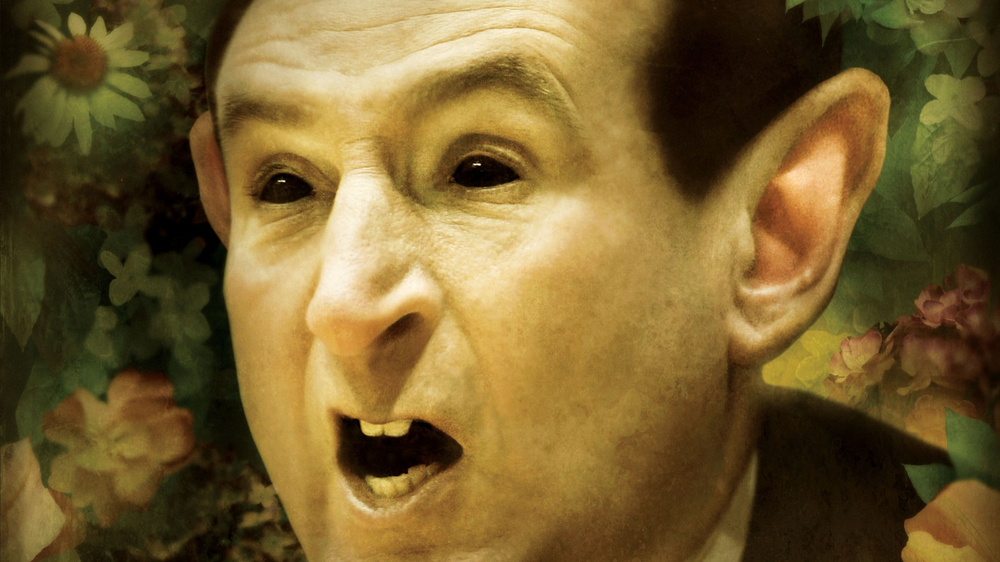

Why Does This Exist?
We made this website for one reason and one reason only: to spread awareness about how Duke is bad.
That's it. That's the whole mission statement. No hidden agenda, no ulterior motive. Just the simple, undeniable truth that Duke basketball, despite all the hype, the ESPN favoritism, and the one-and-done recruits, is and always has been... bad.
From the flops to the floor slaps, from the Cameron Crazies to Coach K's legendary sideline tantrums — this site exists as a permanent, public record that not everyone was fooled.
Whether you're a proud Tar Heel, a Wolfpack loyalist, a Maryland fan who still remembers the ACC days, or just someone who watched Duke get bounced by a 15-seed and thought "yeah, that tracks" — this site is for you.
FAQ
Q: Is Duke actually bad?
A: Yes.
Q: But they've won five national championships?
A: Doesn't matter. Still bad.
Q: Is this a parody?
A: This is a public service.
Q: Are you affiliated with Duke University?
A: Absolutely not. Thank god.
Q: Can I contribute?
A: If you have documented evidence of Duke being bad, we're all ears.

The man himself